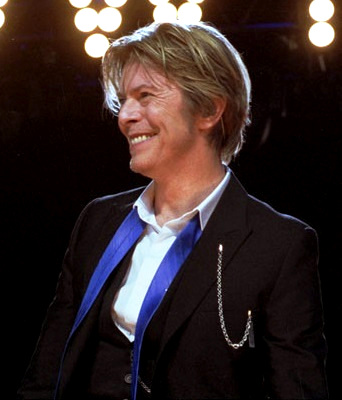
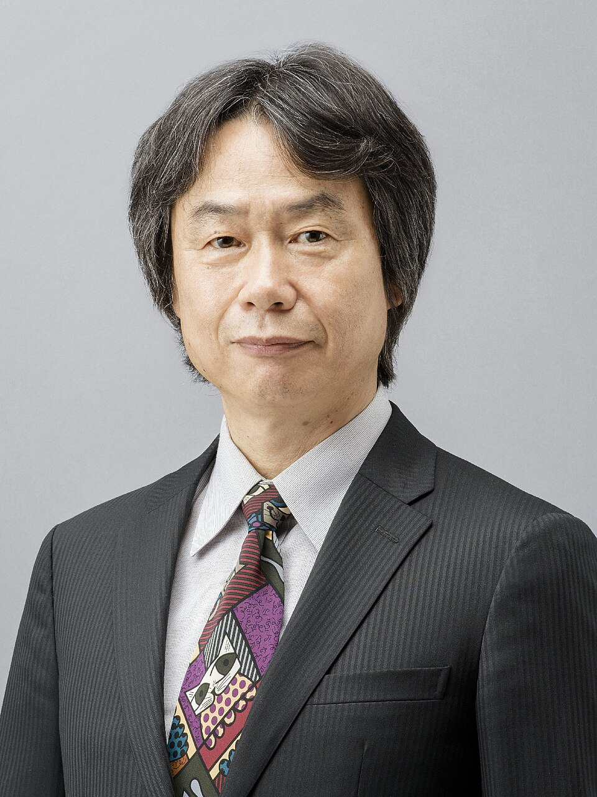

David Bowie is a music artist hailing from the United Kingdom. With twenty-six studio albums spanning a career just under fifty years, he's made quite the impact in the music industry and was always experimenting with his music. I would like to have him over mainly due to me being a major fan of his, and I would also love to know his thoughts when creating some of his songs and albums. Also, I just think he's cool and just an all around chill and funny guy to talk with.
Chris Pratt is an American actor and producer, who has made several big appearances in movies and televison, especially in more recent years. Whether it was his role on Parks and Recreation, or his appearences in major blockbusters like Guardians of the Galaxy and the Super Mario Bros movie, he's been making it big in the scene. I would invite him over mainly due to him being one of my favorite actors ever, and I'd like to talk to him about what I felt were his best perfomances and maybe get insight on his life when trying for those roles. I also think he seems like a nice guy to be around and chat with.

Shigeru Miyamoto is a game developer, producer & director hailing from Japan. He has been working for the company Nintendo since the late seventies, and is behind behind some of their most popular properties, such as Super Mario, Donkey Kong, and The Legend of Zelda, just to name a few. I would invite him primarily due to his field of work is something I wish to aspire to, as someone who is studying and working towards becoming a game developer myself. I would ask him for any advice and discuss various game philosophies he may have implemented in his games. He is one of my idols in that regard.